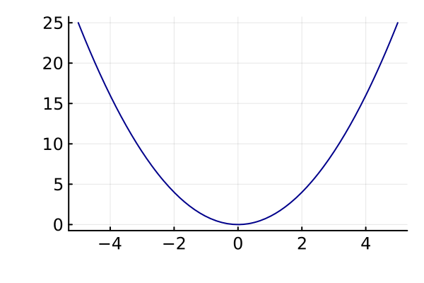
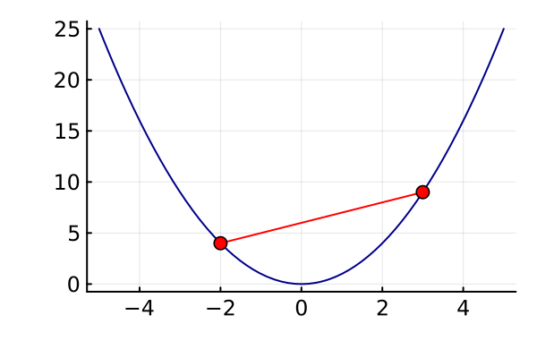

Symmetry Reduction in Convex
Optimization
with Applications in Combinatorics
Daniel Brosch
Symmetry Reduction in Convex
Optimization
with Applications in Combinatorics
Daniel Brosch
Optimization
“ An act, process, or methodology of making something (such as a design, system, or decision) as fully perfect, functional, or effective as possible”
Optimization

Optimization

Optimization

Optimization

Optimization
$$\begin{align*} \min \enspace&f(x)\\ \text{s.t.}\enspace &x \in C \end{align*}$$
Optimization is hard

Optimization is hard
Convex optimization is easier
(But often still hard)
Convex optimization
“ A convex function refers to a function whose graph is shaped like a cup.”
Convex optimization
Convex optimization
Lines between any two points are "inside" the cup.
Convex relaxations
Hard optimization problem $$\Downarrow$$ Easier, bigger, convex problem
Symmetry reduction
Can we solve symmetric convex problems faster?
Symmetry reduction
- How to find symmetries?
- How to exploit symmetries?
- Which problems can we reduce?